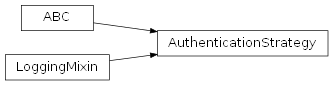
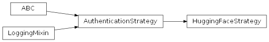
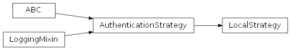
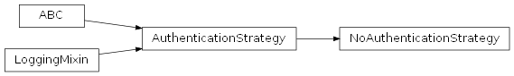

SentimentAnalysis.src.authentication package
Submodules
SentimentAnalysis.src.authentication.authentication_strategy module
authentication_strategy.py
Version 1.0, updated on 2024-12-01
- class SentimentAnalysis.src.authentication.authentication_strategy.AuthenticationStrategy(source: str = '')[source]
Bases:
ABC,LoggingMixinAuthenticationStrategy class.
Abstract base class for all authentication strategies.
This class serves as an interface that declares common operations for all authentication strategies. Specifically, it defines the essential operations for authenticating the user and fetching data, which concrete strategies must implement. Within the framework of a strategy pattern, this design enables a dynamic change of authentication strategies according to the varying requirements of different data sources.
- __init__(source: str = '') None[source]
Constructor.
Initializes a new instance of the AuthenticationStrategy class.
- Parameters:
source (str) – The path of the source from where the data is to be fetched. Defaults to an empty string. If not provided, the concrete strategy implementations must ensure that a source is provided before attempting any authentication or data fetching.
- abstract _authenticate() None[source]
Actual authentication logic, to be implemented by subclasses.
- abstract _fetch(**kwargs: Any) None[source]
Actual fetching logic, to be implemented by subclasses.
- authenticate() None[source]
Authenticates the user using the concrete strategy.
- fetch(**kwargs: Any) Any[source]
Fetches data from the source using the concrete strategy.
- property source: str
Gets the source path.
- Returns:
The source path string.
- Return type:
str
Notes
As the source might not have been provided at the moment of the initialization of the class, it might have defaulted to an empty string. Therefore, this method might return an empty string.
SentimentAnalysis.src.authentication.authenticator module
authenticator.py
Version 1.0, updated on 2024-11-10
- class SentimentAnalysis.src.authentication.authenticator.Authenticator(my_strategy: AuthenticationStrategy | None = None)[source]
Bases:
LoggingMixinThis class serves as the context in a strategy pattern, which allows you to dynamically choose an authentication strategy at runtime.
The class works with any of the authentication strategies that implement the AuthenticationStrategy interface. It gives access to authentication methods such as authenticating the user and fetching data from an external or local source.
- __init__(my_strategy: AuthenticationStrategy | None = None) None[source]
Constructor.
Sets the authentication strategy which is supposed to be used for accessing data. If no strategy is specified when the serializer is called, a default authentication strategy is used.
- Parameters:
my_strategy (AuthenticationStrategy | None) – The authentication strategy to be used. Default value: None.
- static default_strategy() AuthenticationStrategy[source]
Returns the default authentication strategy.
As default, the local strategy is used. Data will be fetched from a local source.
- Returns:
The default authentication strategy.
- Return type:
AuthenticationStrategy
Notes
This method is used instead of a class constant to ensure lazy instantiation. This approach avoids the overhead of creating a default strategy object until it is actually needed.
- property source: str
Gets the source path.
- Returns:
source – the source path of the data in string format.
- Return type:
str
Notes
As the source might not have been provided at the moment of the initialization of the strategy, it might have defaulted to an empty string. Therefore, this method might return an empty string.
- property strategy: AuthenticationStrategy
Gets the current authentication strategy.
- Returns:
The authentication strategy currently in use.
- Return type:
AuthenticationStrategy
SentimentAnalysis.src.authentication.hugging_face_strategy module
hugging_face_strategy.py
Version 1.0, updated on 2024-12-15
- class SentimentAnalysis.src.authentication.hugging_face_strategy.HuggingFaceStrategy[source]
Bases:
AuthenticationStrategyThis class provides authentication and data fetching methods for HuggingFace.
It is a concrete implementation of the AuthenticationStrategy interface.
- authenticate()
Login to HuggingFace.
- fetch(**kwargs: Any)
Fetch data from HuggingFace.
- _authenticate() None[source]
Login to HuggingFaceStrategy.
Uses local environment variable ‘HUGGING_FACE_AUTH_TOKEN’ to authenticate the user for login to HuggingFaceStrategy.
- Raises:
CriticalException – If the environment variable is not set or not found or is invalid.
SentimentAnalysis.src.authentication.local_strategy module
local_strategy.py
Version 1.0, updated on 2024-12-01
- class SentimentAnalysis.src.authentication.local_strategy.LocalStrategy(file_type: str = 'xls')[source]
Bases:
AuthenticationStrategyThis class provides data fetching methods for locally stored files.
It is a concrete implementation of the AuthenticationStrategy interface.
- __init__(file_type: str = 'xls')[source]
Initializes a new instance of the LocalStrategy class with a file type.
- Parameters:
file_type (str) – The file type of the local file.
- _authenticate() None[source]
This method implements the abstract method of the AuthenticationStrategy interface.
- _fetch(**kwargs: Any) DataFrame[source]
This method implements the abstract method of the AuthenticationStrategy interface.
- property serializer: Serializer
Returns the serializer that must be set in this strategy to load the data from the local file.
- Returns:
The serializer for loading the data from the local file.
- Return type:
SentimentAnalysis.src.authentication.no_authentication_strategy module
no_authentication_strategy.py
Version 1.0, updated on 2024-12-17
- class SentimentAnalysis.src.authentication.no_authentication_strategy.NoAuthenticationStrategy(source: str = '')[source]
Bases:
AuthenticationStrategyNoAuthenticationStrategy class.
This class is a concrete implementation of the AuthenticationStrategy interface. It is used for fetching data from an external source when no authentication is required.
